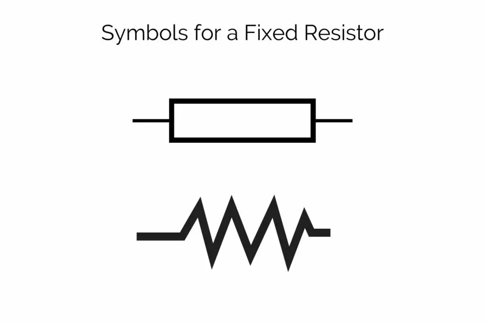
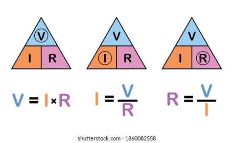

A resistor is a fundamental passive electronic component used to control the flow of electric current in a circuit.
The symbol for a resistor in a circuit diagram is a zigzag line.
Resistors are often color-coded to indicate their resistance value, tolerance, and sometimes reliability or temperature coefficient. The colors represent digits, multiplier, and tolerance values.
Resistance is measured in ohms (Ω), and the resistance value is marked on the resistor using a color code or numerical values.
The power rating of a resistor indicates the maximum amount of power it can dissipate without damage. It is measured in watts (W).
Linear Resistor
Non-linear Resistor
Resistors find applications in various electronic circuits, such as voltage dividers, current limiters, signal conditioning, and biasing circuits.
Ohm's Law (V = I * R) is fundamental to understanding the relationship between voltage (V), current (I), and resistance (R) in a circuit with resistors.
